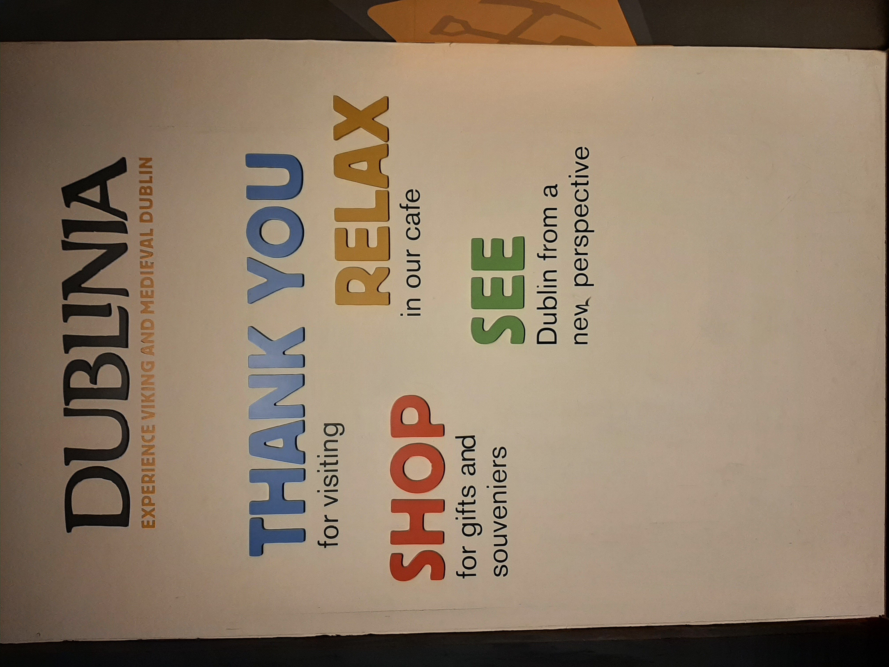
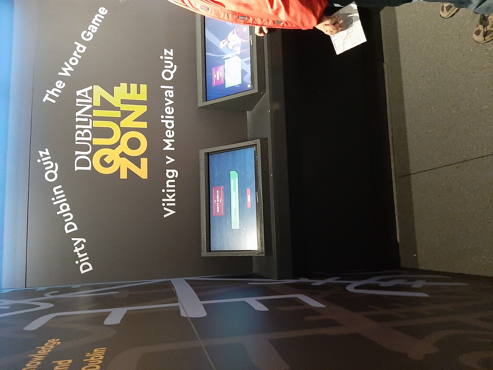
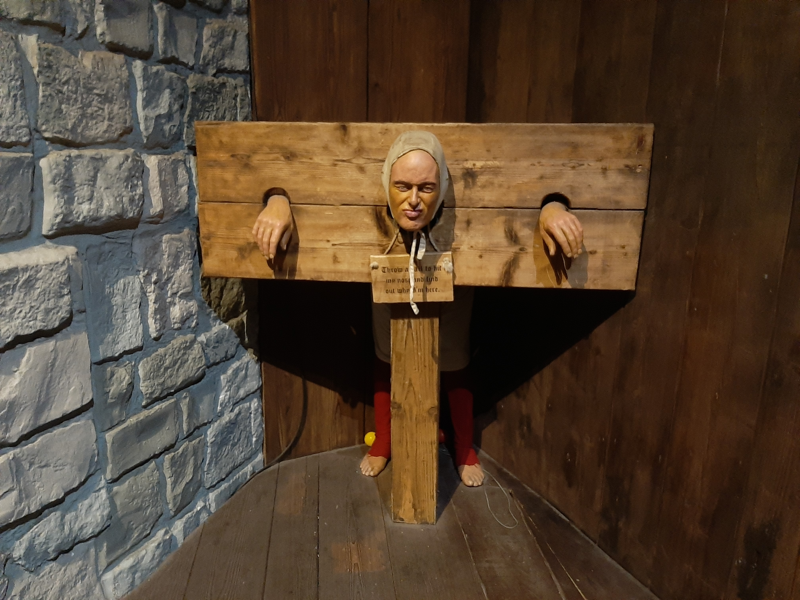

Írország - iskolai szervezésű programok
Dublinia
A látogatásunk a dublini Viking Múzeumban lenyűgöző élmény volt, amely betekintést engedett az írországi viking történelembe. Az interaktív kiállítás során visszarepülhettünk az időben és felfedezhettük a vikingek életét és hagyományait. Az élethűen rekonstruált viking hajók és fegyverek valósághűen mutatták meg a korabeli életet. A múzeumban található interaktív játékokkal megtapasztalhattuk, hogyan készültek a híres viking kardok, valamint részt vehettünk egy viking csatában is. A kiállítás részeként megismerhettük a vikingek mindennapi életét, szokásait és vallását is. A múzeum kiválóan bemutatta a vikingek kulturális és történelmi jelentőségét Dublinban és Írországban.
  Glendalough
Az első hét szombat reggelén indultunk a szokásos helyen az állomáson találkoztunk, majd egy idegenvezetéses busszal mentünk. Az út körülbelül 1 óra volt, de az idegenvezető ír akcentusa miatt sokkal többnek tűnt. Amikor megérkeztünk, volt két óránk felfedezni a helyet, utána vissza kellett mennünk a buszhoz. Glendalough egy elképesztően gyönyörű növényvilággal megáldott helyen volt található. Régen a viking korszakban épült a kis falucska, de meglepően jó állapotban maradt. Miután meglátogattuk a falut, továbbmentünk, és egy gyönyörű tónál kötöttünk ki, ami hegyekkel volt körülvéve. Itt kacsáztunk a kövekkel, fényképeztünk, és még padok is ki voltak lerakva, így volt mire ülnünk. Időben visszaértünk a buszhoz, és indultunk is haza.


Tánc
Szöveg........